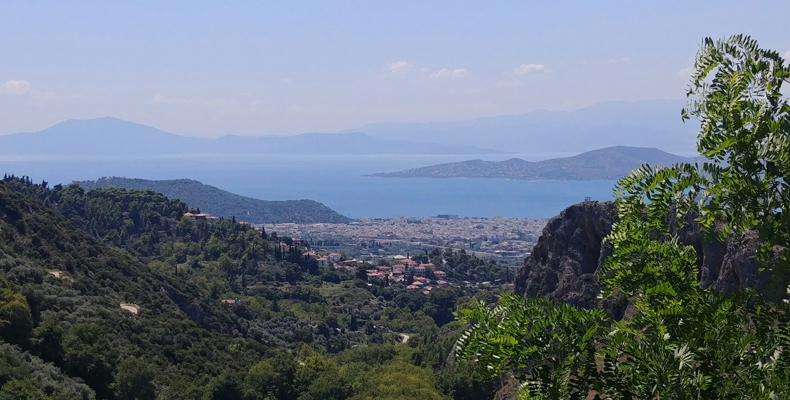
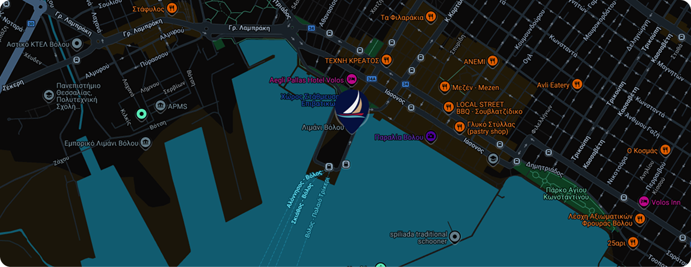

Travelling to Volos
Nea Anchialos Airport serves Volos. Continue to the city by bus, taxi or hire car; check current flight and transfer schedules before travelling.

At the foot of Pelion, Volos opens onto the Pagasitikos Gulf, with access onward to the Sporades. Waterfront cafés and traditional tsipouradika bring the city’s character to the quayside.
Explore the Pagasitikos Gulf and the wider sailing area towards Northern Evia. Discuss your route with our team before setting out.
EXPLORE VOLOS YACHTS ↗
Nea Anchialos Airport serves Volos. Continue to the city by bus, taxi or hire car; check current flight and transfer schedules before travelling.
Yachts are moored along the main waterfront in marina areas A or B. Our team will confirm your berth and meeting point.
Check-in includes port-authority documents, an inventory and a technical briefing for the skipper and co-skipper. Departure follows preparation, the route discussion and suitable weather.
Crew can shop while the briefing takes place. Supermarkets are nearby; ask our team about transport for larger provisioning trips.
Ask about parking near the ferry pier between marinas A and B, and arrival assistance from the bus station.
Reference map from Perfect Sailing. Our team will confirm your exact meeting point before arrival.
OPEN LIVE MAP ↗